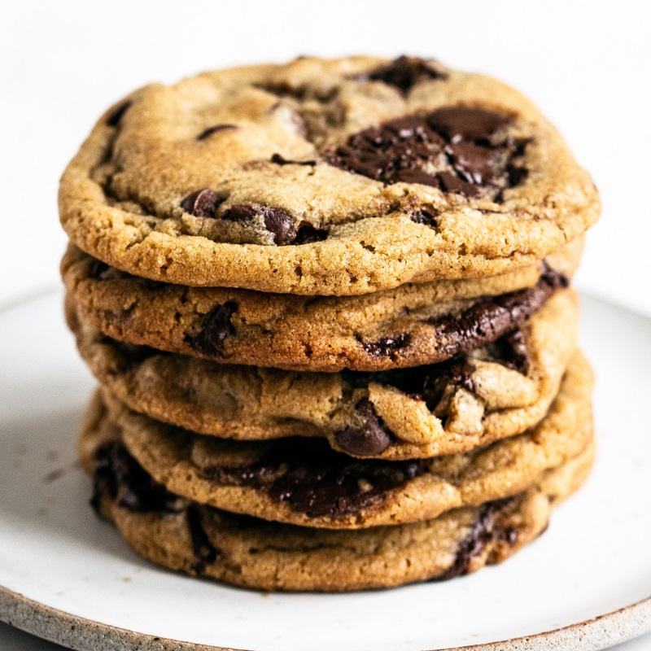

Brown Butter Chocolate Chip Cookies

Description
Chewy, gooey, and crunchy Brown Butter Chocolate Chip Cookies are loaded with
flavor and will surely become your new favorite cookie recipe! No mixer
required.
Ingredients
- 2 sticks (227 grams) unsalted butter
- 1/2 (100 grams) cup granulated sugar
- 1 1/4 cups (250 grams) lightly packed dark brown sugar
- 1 1/2 cups (190 grams) all-purpose flour
- 1 cup (127 grams) bread flour
- 1/4 teaspoon baking powder
- 1 teaspoon baking soda
- 1 teaspoon fine sea salt
- 2 large eggs plus 1 egg yolk, at room temperature
- 2 teaspoons vanilla
- 1 1/2 cups (255 grams) semisweet chocolate chips
-
1 cup (140 grams) semisweet chocolate baking wafers (from Guittard or
Valrhona)
Steps
-
In a small saucepan set over medium heat, melt the butter. Swirling the pan
occasionally, continue to cook the butter. It should become foamy with
audible cracking and popping noises. Once the crackling stops continue to
swirl the pan until the butter develops a nutty aroma and brown bits start
to form at the bottom. Once the bits are amber in color, about 2 to 3
minutes after the popping stops, remove from heat and pour into a mixing
bowl. Add in the sugars, stir, then set aside to cool completely.
-
In a medium bowl combine the flours, baking soda, baking powder, and salt.
-
To the browned butter mixture, add the eggs, egg yolk, and vanilla and stir
with a rubber spatula until combined. Slowly stir in the flour mixture until
just combined. Stir in the chocolate chips and wafers.
-
Wrap dough in plastic wrap and refrigerate for at least 24 hours but no more
than 72 hours. Let dough sit at room temperature just until it is soft
enough to scoop.
-
Meanwhile, preheat the oven to 350ยบF. Line baking sheets with parchment
paper.
-
Divide the dough into 3-tablespoon sized balls and drop onto prepared baking
sheets, leaving about 3 inches between each piece of dough to spread.
-
Bake for 11 to 13 minutes, or until golden brown. Let cool for 2 minutes
before removing to wire racks to cool completely.